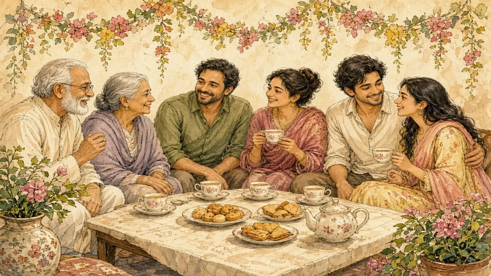

Two words that people often confuse. One is a choice made with family support. The other is a crime.
South and Southeast Asia · Family & marriage · Lesson 3 of 7
🌍 World map · ← Around the World: South and Southeast Asia · 🌱 Easier version (A2) · ← The Head Wobble and Other Gestures · Bollywood: Song, Dance and So Much More →

Each new word is hidden in a sentence. Read it aloud and say what you think the bold word means from the rest of the sentence — then reveal it and see how close you were.
Read each part. After it, there's a quick comprehension check (try the questions from memory first), then one thing to discuss.
In an arranged marriage, families, relatives or a matchmaker introduce two people who might marry, and both people decide whether to accept. In a forced marriage, at least one person does not freely agree, which is a serious human-rights abuse. It is illegal in India and in many other countries; in England and Wales, forcing someone to marry became a crime in 2014. Many people say the key question is simple: could the person say no?
1. What is the key difference between arranged and forced marriage?
2. When did forcing someone to marry become a crime in England and Wales?
1. Whether the person freely consents.
2. In 2014.
In a large survey of India in 2011–12, about nine in ten married women said their marriage had been arranged by their families, though in most cases the couple had some say. Today, the picture is changing: educated and urban young people increasingly choose their partners, or take part in “love-cum-arranged” marriages, where families approve a choice. Online matchmaking sites have been popular since the 1990s. In much of Southeast Asia, such as Thailand, Vietnam and the Philippines, most people choose their own partners, although family approval still matters.
1. What did about nine in ten women in the survey say?
2. What is a “love-cum-arranged” marriage?
1. Their marriage had been arranged by their families.
2. A marriage where the couple choose and the families approve.
People disagree about arranged marriage. Supporters say that families who know both people can judge whether they are compatible and that the marriage gets strong support from relatives. Critics say that it can put pressure on young people, especially women, and that old customs such as the dowry still cause harm. The truth is that there is no single experience: some couples say they are very happy, while others say they felt pressure. What matters is that the choice is free.
1. What do supporters say about arranged marriage?
2. What do critics say?
1. That families can judge compatibility and give support.
2. That it can put pressure on young people, and that customs like dowry still cause harm.
A stereotype and the reality rarely match. This lesson's grammar gives you the structure to describe the difference.
Complete each sentence about this topic.
1. A survey found that nine in ten women said their marriage arranged by their family.
2. She told me that she her partner herself.
3. He asked me whether the couple each other before the wedding.
1. had been (or was)
2. had chosen (or chose)
3. had met (or met)
1. “Both people must agree,” she said. → She said that both people agree.
2. “We will visit your family,” they promised. → They promised that they visit our family.
3. “Is the marriage free?” he asked. → He asked the marriage was free.
1. had to (or must)
2. would
3. whether (or if)
Hold on to this — you'll need it in the Speak tab.
In many societies, marriage joins two families, not just two people, which is why families take part. Until recent times, this was true in Europe too, where marriages were often arranged for money or status. As women gain more education and independence, and as people move to cities, the balance between family and individual choice shifts. The change is gradual, uneven and different in every family.
This is the heart of the lesson — do all of it out loud. The timer is there to keep you going: fill the time with detail rather than escaping it.
Explain the difference between arranged and forced marriage and how things are changing, as if to a friend who thinks every South Asian marriage is forced. Report what different people say. Move through the arc: two different things → a changing practice → different voices.
Use today's grammar at least three times, and work in at least five key words (consent, matchmaker, compatible, dowry, expectation, in-laws, forced, approve).
“Families should have no say in who their children marry.” Discuss.
Tell a story from your own world — work, family, the news — that connects to this topic. Stuck for an idea? Pick one of these and run with it:
🌍 World map · ← Around the World: South and Southeast Asia · 🌱 Easier version (A2) · ← The Head Wobble and Other Gestures · Bollywood: Song, Dance and So Much More →